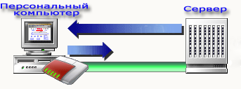
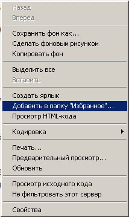
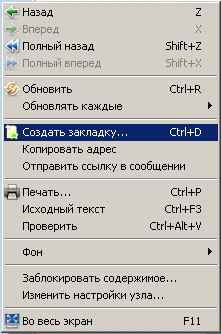
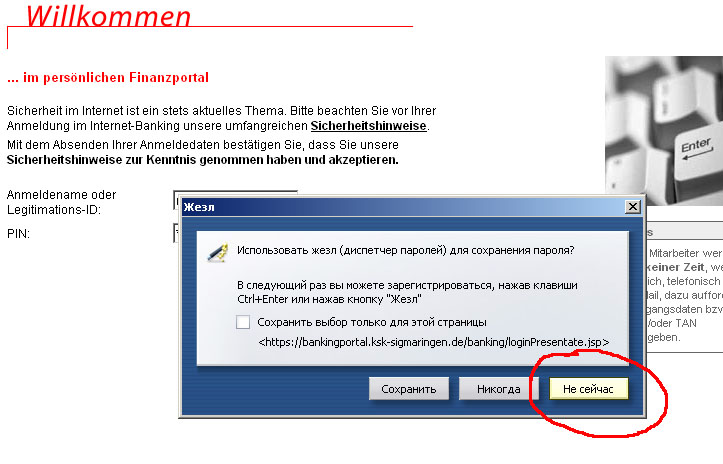

Что такое Интернет и основы использования Интернет-браузеров.
Технология, позволяющая наступить на грабли, находящиеся на другой стороне земного шара.
Интернет - уникальное средство поиска лиц, способных разделить с вами любые интересы и поддержать общение на любую волнующую Вас тему.
Интернет обеспечивает оперативный доступ к поистине необозримым кладезям информации по любой тематике (на десятках тысяч информационных серверов).
Интернет это совокупность компьютеров, соединенных между собой кабелями различного типа. Физически выглядит как паутина, где каждый узел паутины представляет собой Персональный Компьютер.
Компьютеры соединены посредством провайдера (таких например как: 1und1 DSL, Freenet DSL, Alice DSL, T-Home DSL) через Modem, DSL- Router или Lan-Router с сервером провайдера, который на определённых условиях предоставляет Вам доступ к всемирной паутине.

Основные условия провайдера понимаются как Bandbreite и Тарифы за количество закачанной информации.
Некоторые скажут, что они ничего не качают, но это будет ошибочно, т.к. заходя на этот сайт, и нажав на ссылку страницы, Ваш компьютер закачал нашу страничку, которая весит (имеет объём) скажем 250 kB.
Теперь немного о Bandbreite, этот параметр определяет скорость Вашего интернет-соединения. К примеру сравним DSL 1000 и DSL 6000 Bandbreiten. DSL 1000 имеет 1.024 kBit/s на закачку (download), и 128kBit/s на отправку (upload, с этой скоростью фотография, которую Вы отправляете с Вашего компьютера, попадает на сервер). DSL 6000 имеет 6.016 kBit/s на закачку, и около 700kBit/s на отправку. Но что означает это для Вас, спросите Вы. Всё очень просто. Вы наверняка видели в магазинах СД-диски. Один СД-диск имеет объём около 700 Мв, что примерно равноценно объёму одного фильма.
Всё вышесказанное означает, что один такой диск (фильм) Вы скачаете с Интернета при DSL 1000 примерно за 115 минут, а при скорости DSL 6000 соответственно в 6 раз быстрее. Т.е. чем выше Bandbreite тем выше скорость закачки.
Тарифы бывают тоже разными. Есть тарифы для начинающих (в зависимости от провайдера), которые ограниченны по объёму трафика (количество скачанной информации в Mb, Gb) или ограниченны по времени (100 часов например), и есть так называемый Flat-тариф, без ограничений по времени или трафику. В последнее время наиболее распространён Flat-тариф.
Для того чтобы мы могли пользоваться или сюрфовать во всемирной паутине, на Персональном компьютере должна быть установлена программа-браузер. К таким программам относятся широко известные Internet Explorer (IE), Opera, Mozilla Firefox и многие другие (а их великое множество). Некоторые виды браузеров можно просмотреть на http://browsershots.org/
На операционной системе Windows по умолчанию стоит Internet Explorer. Лично я сделал свой выбор в пользу Opera.
Итак, что происходит дальше? Подключаемся к Интернету, если ещё не подключены. Открываем браузер. В каждом браузере есть адресная строка, как и у каждого сайта есть свой адрес (например www.magnum77.de). Мы вводим в адресной строке адрес сайта, жмём и попадаем на сайт. В большинстве случаев "www" вводить не надо, браузер сам найдёт адрес. После того как мы нажимаем на какую-то ссылку, браузер вставляет её адрес в адресную строку и автоматически её открывает.
Теперь поговорим о работе с браузером.
Для удобства в использовании, браузеры оснащены кнопками навигации: назад, вперёд, обновить.
Они находяться обычно в левом, верхнем углу.
Посредством ссылок в Интернете, Вы сюрфуете со страницы на страницу, некоторые из которых Вам понравились, но записывать их адреса на бумажке утомительно, а набирать их адрес в адресную строку вообще мрак. Для этого в Internet Explorer существует папка или кнопка "ИЗБРАННОЕ", а в Opera "ЗАКЛАДКИ". Для того чтобы занести страницу в избранное или закладки, нужно нажать правой кнопкой мыши на открытой странице. В подменю выбрать в Internet Explorer "Добавить в папку "Избранное", а в Opera "Создать закладку", в этот момент Вы можете также создать описание этой страницы.

Добавление сайта в Избранное в Internet Explorer

Добавление Закладки в Opera
После этого жмём Enter и страница будет сохранена на Вашем компьютере. Для её открытия, Вам понадобиться нажать на кнопку "Избранное" или "Закладки" и выбрать сохранённую страницу.
Хотелось бы выделить ещё один параметр браузера, а именно запоминание паролей. Если компьютером пользуются более одного человека, то в целях безопасности конфиденциальной информации, этим инструментом пользоваться не следует.

Запоминание паролей
Если Вам Интернет уже без надобности, то Вы просто закрываете браузер крестом в правом верхнем углу.
Для тех, у кого трафик или ограничение по времени, рекомендуется отключить Интернет-соединение, во избежание перерасхода.
На этом данная статья завершена. Если у Вас есть какие-то комментарии или вопросы, то оставляйте их ниже.
С уважением,
magnum77.de
Оставить коментарий
Главная/Всё о компьютерах/Интернет для начинающих/Что такое Интернет

 У вас есть замечания/предложения?
У вас есть замечания/предложения?